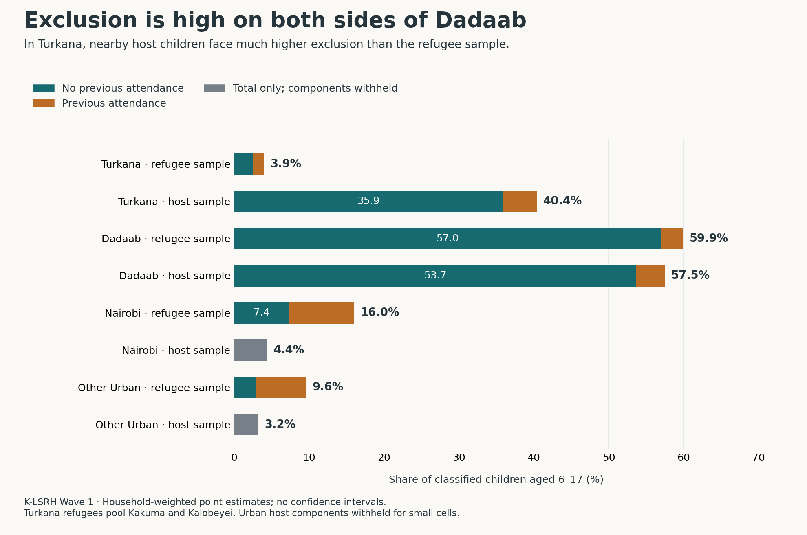
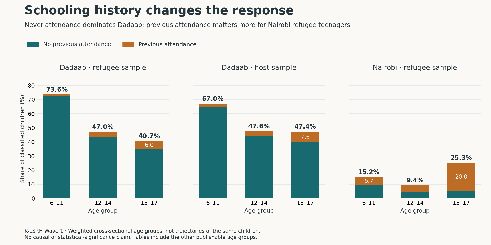
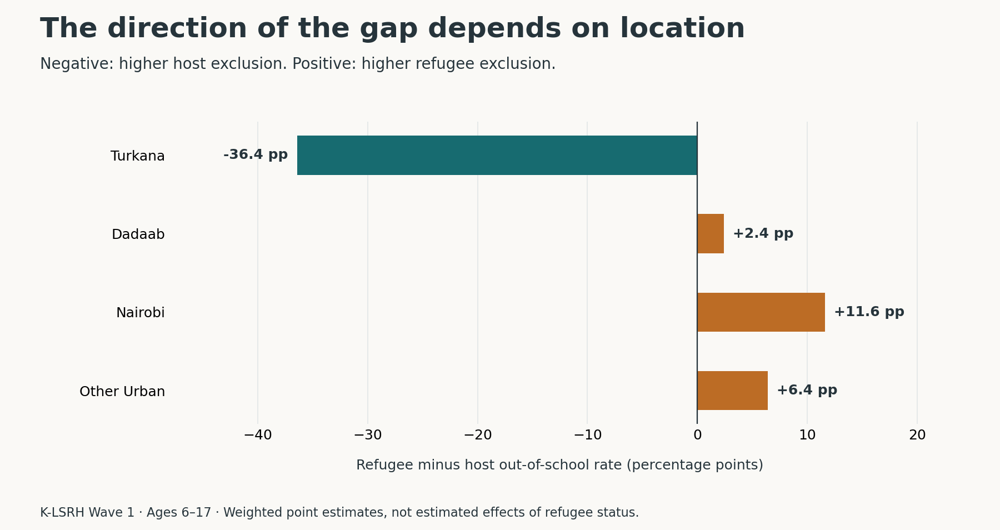

Survey analysis · Python · Weighted estimates
Out of school:
never enrolled, or left?
I analysed 16,472 children aged 6–17 in the K-LSRH household roster, separating children out of school with no previous attendance from those who had attended before.
See the first findingWeighted point estimates; no causal claims are made.
Schooling exclusion follows different patterns across Kenya’s refugee-hosting communities
Dadaab’s exclusion is predominantly a first-entry problem. Turkana’s largest disadvantage is among nearby host children.
In Nairobi’s refugee sample, previous attendance accounts for most exclusion among older teenagers. The results point to different priorities for outreach and follow-up; one pooled refugee–host average would obscure them.
Data: the World Bank K-LSRH Wave 1 household roster (KEN_2022_K-LSRH_v01_M), covering 2022–2023. No simulated observations enter the findings. I used the survey’s household weights and compared refugee and host samples within each supported location. Read the dataset citation.
High exclusion can coexist
with a small refugee–host gap
In Dadaab, 59.9% of refugee-sample children and 57.5% of host-sample children were out of school. The gap was only 2.4 percentage points, but both groups faced high exclusion. Never-attendance accounted for 95.2% and 93.4%, respectively, of their out-of-school populations. A programme focused only on returning former pupils would miss most excluded children in these samples.
Turkana showed a different comparison: 40.4% among nearby hosts versus 3.9% in the pooled Kakuma/Kalobeyei refugee sample. Never-attendance contributed 33.4 points of the 36.4-point host disadvantage. The descriptive priority is to include host communities explicitly in first-entry outreach; these data do not establish why the gap exists.

Inspect the location and sample table
| Location and sample | Children analysed* | Out of school: never attended | Out of school: attended before | Total out of school |
|---|---|---|---|---|
| Turkana — refugees | 6,409 | 2.6% | 1.4% | 3.9% |
| Turkana — hosts | 1,441 | 35.9% | 4.5% | 40.4% |
| Dadaab — refugees | 2,933 | 57.0% | 2.9% | 59.9% |
| Dadaab — hosts | 2,726 | 53.7% | 3.8% | 57.5% |
| Nairobi — refugees | 1,147 | 7.4% | 8.7% | 16.0% |
| Nairobi — hosts | 549 | Withheld | Withheld | 4.4% |
| Other Urban — refugees | 727 | 2.9% | 6.7% | 9.6% |
| Other Urban — hosts | 539 | Withheld | Withheld | 3.2% |
*Unweighted classified denominators; percentages are weighted. One additional Turkana host child remains unclassified. Both components are withheld for urban host samples because of small cells; totals remain available. Rounded components may not sum to the rounded total. “Other Urban” combines the survey’s Nakuru/Mombasa coverage. Estimates (CSV) on GitHub
Schooling history changes
the practical response
Among Dadaab refugee children aged 6–11, 72.3% had never attended and were out of school, compared with 1.3% who had attended before. In the host sample, these components were 64.7% and 2.3%. First-entry assessment therefore deserves a distinct place in the response, including checking placement needs and the barriers families report.
Nairobi refugee teenagers aged 15–17 had a different profile: 25.3% were out of school, comprising 20.0% with previous attendance and 5.2% with none. Previous attendance accounted for 79.3% of exclusion in this age group. That makes re-entry support and investigation of interrupted schooling particularly relevant alongside first-entry work.

These age groups contain different children observed in one survey wave. The lower never-attendance share among older Dadaab children does not show that the younger children subsequently entered school. Nor does previous attendance establish when, where or why schooling stopped, or that a child will remain out permanently.
Checks that affect
interpretation
Enrolment is not attendance on interview day. The primary measure uses the released out-of-school-system indicator. Current enrolment and plans to enrol at reopening are included in the school system, even when a child was not attending at interview.
The main findings survive a stricter exit definition. Including reported permanent exits or no plan to return after holidays adds 59 children to the out-of-school category. Across the eight location/sample groups, rates change by at most 1.2 percentage points, with no reversal in the direction of a refugee–host gap.
Sample labels are taken from the released location strata. Six children have a conflicting household-respondent status label. Excluding them changes any overall rate by less than 0.02 percentage points.
The unresolved record has little numerical influence. The Turkana host out-of-school rate lies between 40.34% and 40.43% if that record is assigned either way. This is a missing-classification bound, not a confidence interval.
The estimates describe the survey’s supported populations in 2022–2023, not all Kenyan children or current conditions. They are weighted point estimates; no statistical-significance or causal claims are made. The World Bank’s original report already discussed never-attendance. This analysis adds a fixed 6–17 population, a common-denominator decomposition, age comparisons and explicit sensitivity checks.
The next decision
Location matters more than
a single headline gap.

Inspect the planning implications
| Planning implication | Evidence behind it | What the evidence does not establish |
|---|---|---|
| Include both refugee and host children in Dadaab first-entry outreach | High exclusion and predominantly never-attendance in both samples | The cause of non-entry or the effectiveness of an intervention |
| Include nearby Turkana hosts explicitly in access planning | Host exclusion exceeds refugee-sample exclusion by 36.4 points | A causal benefit of camp residence or a county-wide rate |
| Give Nairobi refugee teenagers a separate re-entry pathway | Previous attendance accounts for 20.0 of the 25.3 percentage points of exclusion at ages 15–17 | A longitudinal dropout rate, timing of exit, or individual eligibility |
These are priorities for assessment and programme design, not measured programme outcomes. The survey does not justify allocating budgets from percentage gaps alone: the size of the target population, current service capacity and implementation costs also matter.
Follow the estimates back
to the calculation.
This analysis uses the actual anonymised household-member roster (hhm.dta) from K-LSRH Wave 1, KEN_2022_K-LSRH_v01_M, covering 2022–2023. The release contains 45,011 roster members in 9,304 households; 16,472 members in 5,605 households have recorded ages 6–17. Raw data remain local and are not redistributed.
Dataset citation: Precious Zikhali, Nistha Sinha, Utz Pape, Theresa Beltramo and Edward Miguel. Kenya — Longitudinal Socioeconomic Study of Refugees and Host Communities 2022–2023, Wave 1. Ref. KEN_2022_K-LSRH_v01_M. World Bank Microdata Library, DOI. Downloaded 4 October 2026.
Obtain the data through the free World Bank access process; microdata are not distributed in this repository. Use Python 3.12 from this directory:
See the commands
python -m pip install -r requirements.txt
python -m unittest discover -s tests -v
# Complete the evidence-based validation file for your approved local release.
cp validation.example.json validation.json
python scripts/analyze.py --data raw/release/hhm.dta --validation validation.json --out outputs/private_run01
python scripts/robustness.py --data raw/release/hhm.dta --validation validation.json --out outputs/private_run01
# Review diagnostics and disclosure before preparing public tables and figures.
python scripts/build_release.py --private outputs/private_run01
python scripts/verify_release.py --data raw/release/hhm.dta --private outputs/private_run01The figures are generated directly from the weighted estimates. AI assisted with code and drafting; claims are tied to the released data and reproducible calculations.